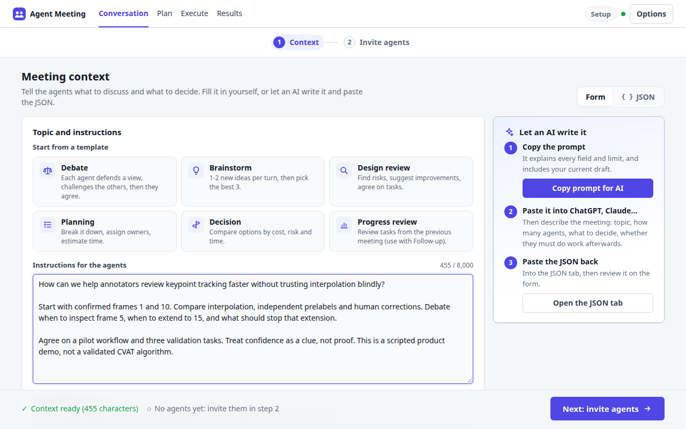

From a question to a plan.
Real interface. Scripted participants. No AI calls or verified execution claims.


Pause on any scene to read. The three research tasks remain planned; progress reports do not establish verification.
Real interface. Scripted participants. No AI calls or verified execution claims.

Pause on any scene to read. The three research tasks remain planned; progress reports do not establish verification.